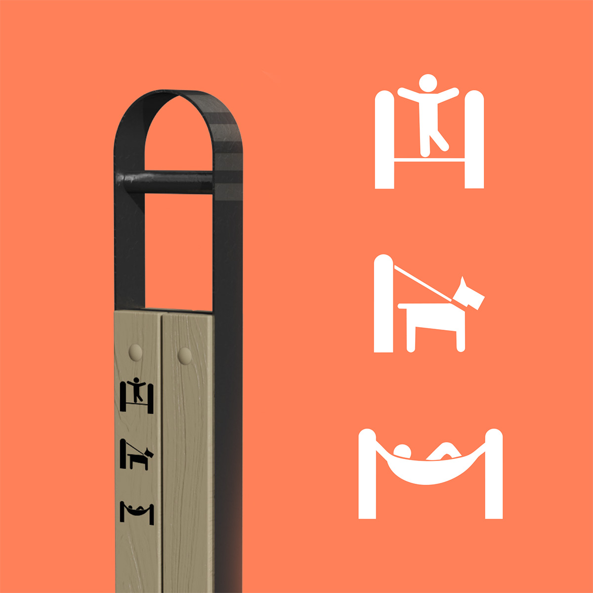
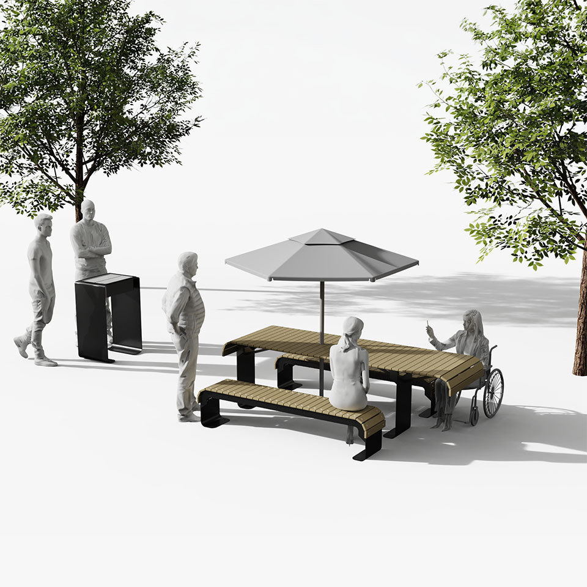

Le projet repose sur une logique d'assemblage simple qui permet d'y ajouter diverses composantes au fil du temps. Une attention particulière a donc été portée à la mise au point technique de la gamme. Elle reprend également le petit madrier qu’on retrouve sur le banc archétype du Vieux Québec, ceux-ci en deux longeurs faciles à manufacturer.
À terme, Orme propose aux usagers du mobilier qui les accompagne dans leurs façons d'habiter les parcs, que ce soit pour se rassembler, faire de l’activité physique, cuisiner, travailler ou se reposer.